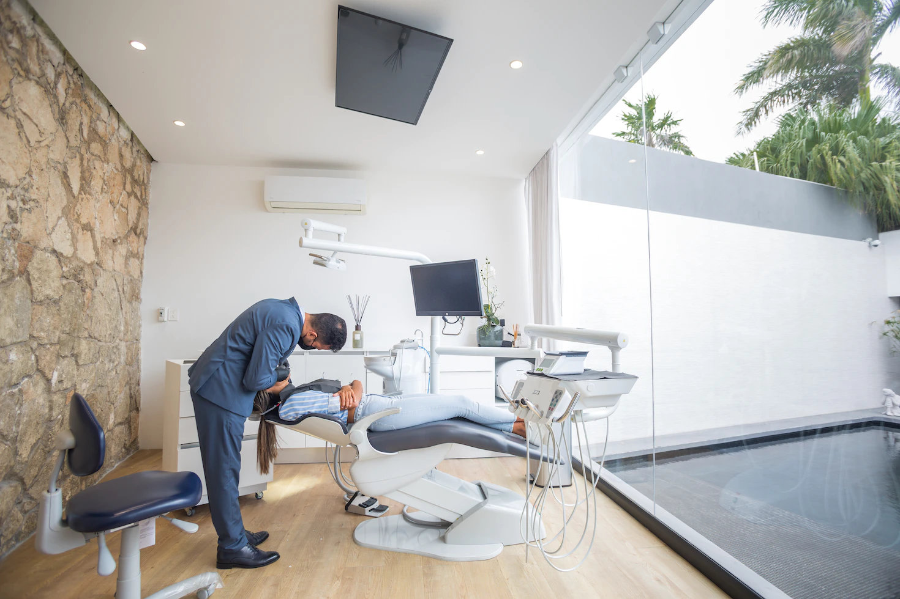

In Ihrer Ordination reicht Sauberkeit alleine nicht aus, Sie wollen gründliche Hygiene und zuverlässige Desinfektion. Jeden Tag besuchen besondern vulnerable Patienten Ihre Praxis. Sie sollen keiner erhöhten Ansteckungsgefahr ausgesetzt werden. Unsere Reinigungsmitarbeiter sind auf die Ordinationsreinigung geschult und kennen sowohl die besten Praktiken als auch die erforderlichen Hygienestandards. Dabei setzen wir hochwertige und biologisch abbaubare Reinigungsmittel ein.
Gleich ob kleine eine Ordination oder eine große Gemeinschaftspraxis – wir sind Ihr zuverlässiger Partner für die Reinigung. Wir haben die notwendigen Qualifikationen, um Ihnen gründliche Hygiene zu können, indem wir mit einer umfassenden Desinfektion aller notwendigen Flächen pathogene Keime abtöten.
Zuverlässigkeit und Hygiene
Auf uns können Sie sich verlassen. Für den Umfang, den Intervallen und den genauen Leistungen richten uns nach Ihrem Bedarf.
- Gründliche Reinigung der Flächen und Böden im Warteraum, den Büroräumlichkeiten und in den Behandlungsräumen.
- Desinfektion sämtlicher Flächen und Böden.
- Reinigung der Sanitärräume.
- Reinigung der Fenster.
Unsere Reinigungskräfte sind auf die Einhaltung der für Ordinationen wichtigen Hygienestandards geschult. Wir bieten:
- Qualifizierte Reinigungskräfte
- Die Einhaltung der Hygienestandards
- Einsatz keimhemmender Reinigungs- und Desinfektionsmittel
Wir erstellen für Sie eine individuelles Angebot
Lassen Sie uns wissen, was Ihre Wünsche, Anforderungen und Vorstellungen sind. Dann erstellen wir Ihnen ein individuelles Angebot für unseren Reinigungsservice.

Dienstleistungen
Zitat zum Thema
"Noch schlimmer für einen Arzt als der eingebildete ist heute der halbgebildete
Kranke."
- Gerhard Uhlenbruck, deutscher Immunbiologe